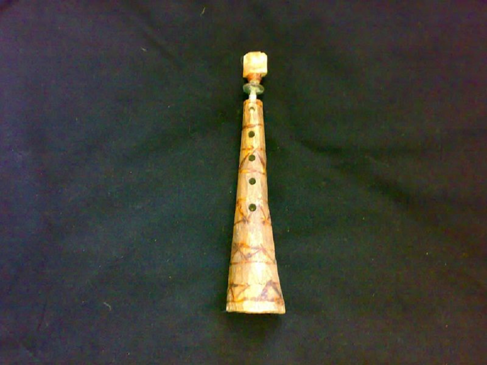

La chirimía andina
Apunte 035
Inicio > Blog Bitácora de un músico > Apunte 035
Una chirimía con varios nombres
En 1942, la etnomusicóloga argentina Isabel Aretz recolectó una chirisuya durante una expedición de investigación por Perú y Bolivia. El instrumento, conservado actualmente en el Instituto Nacional de Musicología Carlos Vega, consiste en un tubo de madera ligeramente cónico, con un pabellón ensanchado, siete orificios de digitación y una lengüeta doble montada sobre un tudel. Entre los materiales documentados se encuentran la madera y las plumas de ave.
El instrumento pertenece a una familia de aerófonos de doble lengüeta introducidos en Hispanoamérica durante el período colonial. La chirimía europea adquirió diferentes nombres, métodos de construcción y funciones musicales a medida que se incorporaba a las tradiciones regionales.
En Perú se han documentado instrumentos relacionados bajo nombres como chirisuya, churusuya, chirimbela, dulzaina y tiple. La distribución de estos términos varía geográfica e históricamente. En el norte de Perú, chirimía y dulzaina son denominaciones habituales, mientras que chirisuya aparece en las regiones centrales y meridionales.
También sobreviven instrumentos relacionados en Ecuador, particularmente en Azuay y Cañar, donde la chirimía participa en celebraciones religiosas y festivas.
Estos instrumentos comparten un principio constructivo básico, pero sus historias regionales no son idénticas.
Lengüetas, tubos de madera y artesanía local
La característica que define a la chirimía es su lengüeta doble. Dos láminas flexibles vibran una contra otra cuando el músico sopla entre ellas, regulando el aire que entra en el instrumento. La lengüeta se conecta a un cuerpo de madera, generalmente de perforación cónica y con orificios de digitación para modificar la altura del sonido.
La chirisuya recolectada por Aretz tiene siete orificios de digitación y una lengüeta doble montada sobre un tudel. En la clasificación Hornbostel-Sachs, los instrumentos de esta construcción pertenecen a la categoría 422.112.2, aerófonos individuales de doble lengüeta, con perforación cónica y orificios de digitación.
Los detalles constructivos varían considerablemente. Algunas descripciones peruanas mencionan plumas de ave, incluidas las plumas de cóndor, como componentes del conjunto de la lengüeta. Otras documentan el uso de caña y diferentes sistemas de montaje.
Los testimonios de principios del siglo XX procedentes de Lambayeque ofrecen una descripción particularmente interesante de la fabricación de estos instrumentos.
El etnógrafo alemán Heinrich Brüning recopiló información sobre las chirimías locales durante sus investigaciones en el norte de Perú. En una nota de campo de 1910, describió cómo sus cuerpos de madera se fabricaban en comunidades de la sierra, mientras que los músicos o propietarios podían añadir posteriormente anillos de plata y otros adornos.
Brüning también recordó haber conocido a un constructor en Colaya, en la sierra de Lambayeque, que trabajaba con madera de hualtaco.
Las descripciones regionales mencionan instrumentos de aproximadamente 25 a 50 centímetros de longitud, generalmente con seis o siete orificios principales de digitación. Estas dimensiones, junto con las diferencias en la construcción de las lengüetas, ilustran la diversidad de la artesanía local.
En Ecuador, Patricia Pauta Ortiz (2013) documentó una chirimía utilizada durante la Fiesta del Señor de las Aguas, en Girón. El instrumento, de aproximadamente 28 centímetros de longitud, tiene un cuerpo de madera cónico y una lengüeta doble fabricada generalmente con guadua, con componentes metálicos incorporados al conjunto de la boquilla.
Así, aunque estos instrumentos pertenecen a una familia organológica reconocible, su construcción refleja diferentes materiales y tradiciones de fabricación regionales.
De las instituciones coloniales a las celebraciones locales
La presencia de las chirimías en los Andes forma parte de la historia más amplia de los instrumentos introducidos durante la expansión colonial española.
En la península ibérica, las chirimías habían acompañado durante mucho tiempo procesiones, celebraciones cívicas, ceremonias religiosas y conjuntos instrumentales al aire libre. Durante el período colonial, los instrumentos de viento europeos pasaron a formar parte de las actividades musicales organizadas en torno a iglesias, instituciones educativas y festividades públicas en Hispanoamérica.
Robert Stevenson (1968) documenta la participación de músicos indígenas en estas tradiciones instrumentales coloniales. En Ecuador, los testimonios históricos relacionados con el Colegio de San Andrés de Quito describen la formación de músicos indígenas y mestizos en canto e interpretación instrumental durante el siglo XVI, incluida la enseñanza de la chirimía.
Estos documentos establecen una presencia institucional temprana del instrumento. Sin embargo, su desarrollo regional posterior puede examinarse de manera más concreta a través de las prácticas musicales documentadas en Perú y Ecuador.
La chirisuya en Perú
En julio de 2008, el Instituto Nacional de Cultura de Perú declaró la chirisuya parte del Patrimonio Cultural de la Nación mediante la Resolución n.º 997/INC, publicada el 3 de agosto.
La declaración reconoció nombres regionales como churusuya, chirimbela y tiple, e identificó varias tradiciones en las que el instrumento desempeñaba un papel importante.
Una de ellas era la Fiesta del Agua, en la cuenca alta del río Santa Eulalia, al este de Lima, donde la interpretación musical acompaña actividades comunitarias relacionadas con el riego. El instrumento también fue documentado en las festividades de la Virgen de Cocharcas, en Apurímac, y de la Virgen de las Mercedes, en Ferreñafe, Lambayeque. En el norte de Perú, la música de chirimía estaba asociada con la danza de Los Diablitos, particularmente en Mochumí y Túcume.
La declaración también reconoció los conocimientos especializados de los músicos que tocaban estos instrumentos. Según la región, podían recibir los nombres de tripleros, chirisuyeros o chirimiyeros. Su participación estaba vinculada con ocasiones ceremoniales específicas y repertorios musicales establecidos, y no simplemente con la disponibilidad de un instrumento.
Algunas de estas tradiciones también se conservan en grabaciones sonoras tempranas. Entre 1910 y 1925, Heinrich Brüning utilizó un fonógrafo de cilindros de cera para grabar a músicos de Lambayeque y Eten. Su colección incluye danzas, marchas y otras interpretaciones instrumentales de la costa norte peruana.
Una de las grabaciones, catalogada como marcha procesional, identifica la chirimía y la caja entre sus instrumentos. En la descripción del catálogo histórico también aparece un clarinete, aunque un examen posterior ha planteado dudas sobre si realmente puede escucharse. Los cilindros son particularmente valiosos porque conservan interpretaciones de un entorno instrumental documentado hace más de un siglo. Los cuadernos de Brüning complementan las grabaciones con observaciones sobre músicos, constructores de instrumentos y terminología regional.
El trabajo de campo posterior reveló cambios en estas prácticas. Durante las investigaciones realizadas en Lambayeque en 1990-1991, investigadores del Instituto de Etnomusicología de la Pontificia Universidad Católica del Perú entrevistaron a músicos vinculados con Los Diablitos. Entre ellos se encontraba Victorino Acosta, identificado como uno de los últimos intérpretes de chirimía en una localidad donde el instrumento estaba siendo reemplazado progresivamente por flautas.
La documentación registra, por lo tanto, diferentes situaciones: instrumentos que todavía se tocaban en determinadas celebraciones, tradiciones que estaban siendo reemplazadas en ciertas comunidades e interpretaciones anteriores conservadas mediante grabaciones y colecciones museísticas.
La chirimía de Girón, Ecuador
El sur de Ecuador proporciona otro ejemplo de la incorporación del instrumento a la vida ceremonial regional.
Raúl Garzón Guzmán (1994) documentó la chirimía en zonas rurales de Azuay y Cañar, particularmente en relación con festividades religiosas. Patricia Pauta Ortiz realizó una investigación más detallada mediante un trabajo de campo desarrollado en 2008 y 2009 sobre la Fiesta del Señor de las Aguas en Girón, Azuay.
La celebración se extiende durante varias semanas y combina ceremonias religiosas, procesiones, danzas, preparativos comunitarios y actividades organizadas mediante un sistema de priostes, o patrocinadores de la fiesta. Diferentes músicos cumplen distintas funciones durante estos acontecimientos. Pauta Ortiz describe la participación de un "maestro de la chirimía", acompañado por un intérprete de redoblante. También participan en las festividades violinistas, bandas de viento, acordeonistas, saxofonistas y otros músicos.
La chirimía tiene una función particular en el anuncio y la coordinación de las actividades ceremoniales. Una de sus melodías principales, la llamada, señala el comienzo de la celebración y convoca a los participantes. El instrumento también acompaña las procesiones y contribuye a organizar los movimientos de la escaramuza, una representación ecuestre ceremonial.
La posición del músico es igualmente importante. Pauta Ortiz documenta cómo los priostes invitan formalmente a participar a los intérpretes reconocidos de chirimía, en reconocimiento de sus conocimientos del repertorio y de las responsabilidades asociadas con su actuación.
El instrumento está vinculado, por lo tanto, con determinadas melodías, momentos ceremoniales y relaciones entre los músicos y los organizadores de la fiesta. Se trata de una historia musical diferente de las documentadas en las ceremonias de riego peruanas o las danzas de Lambayeque, a pesar de que los instrumentos comparten un mismo principio constructivo.
Un nombre, diferentes instrumentos
La variación geográfica de la palabra chirimía introduce otra complicación. En algunas regiones de Colombia, incluida la zona del Cauca, el término puede referirse a una práctica musical encabezada por flautas o a un conjunto instrumental, en lugar de designar un instrumento de doble lengüeta.
El nombre ha seguido, por lo tanto, diferentes caminos. En algunas tradiciones peruanas y ecuatorianas continúa designando un instrumento estructuralmente relacionado con la chirimía europea. En otros lugares ha adquirido significados asociados con diferentes instrumentos y prácticas musicales colectivas.
Para la investigación histórica, esta distinción es fundamental. Encontrar la palabra chirimía en un documento no permite establecer, por sí solo, qué instrumento se tocaba. Las evidencias deben proceder de las descripciones concretas, los instrumentos conservados, las grabaciones y las tradiciones interpretativas asociadas con cada localidad.
Lecturas
- Baines, Anthony. 1967. *Woodwind Instruments and Their History*. 3.ª ed. Londres: Faber & Faber.
- Garzón Guzmán, Raúl. 1994. "Acercamiento a la chirimía". Sarance 20: 103-120.
- Instituto Nacional de Cultura del Perú. 2008. Resolución Directoral Nacional n.º 997/INC: Declaran Patrimonio Cultural de la Nación al instrumento musical de viento Chirisuya. 25 de julio. Publicada en El Peruano, 3 de agosto, pp. 377504-377505.
- Instituto Nacional de Musicología Carlos Vega. s. f. "Chirisuya". Colección de Instrumentos Musicales, pieza n.º 099. Recolectada por Isabel Aretz durante la expedición de investigación realizada en Bolivia y Perú en 1942.
- Pauta Ortiz, Patricia. 2013. "Transculturación musical en la fiesta del Señor de las Aguas de Girón: estudio de la apropiación y cambio de rol de la chirimía y el violín". Revista del Instituto de Investigación Musicológica Carlos Vega 27: 171–195.
- Real Academia Española. 2025. "Chirisuya". Diccionario histórico de la lengua española. Versión del 25 de junio de 2025.
- Stevenson, Robert. 1968. Music in Aztec & Inca Territory. Berkeley: University of California Press.
- Yep, Virginia. 2024. Don Enrique y la música de los Moche. Lima: Instituto de Etnomusicología, Pontificia Universidad Católica del Perú.
Video. Del usuario de YouTube Rojas Rojitas Producciones.